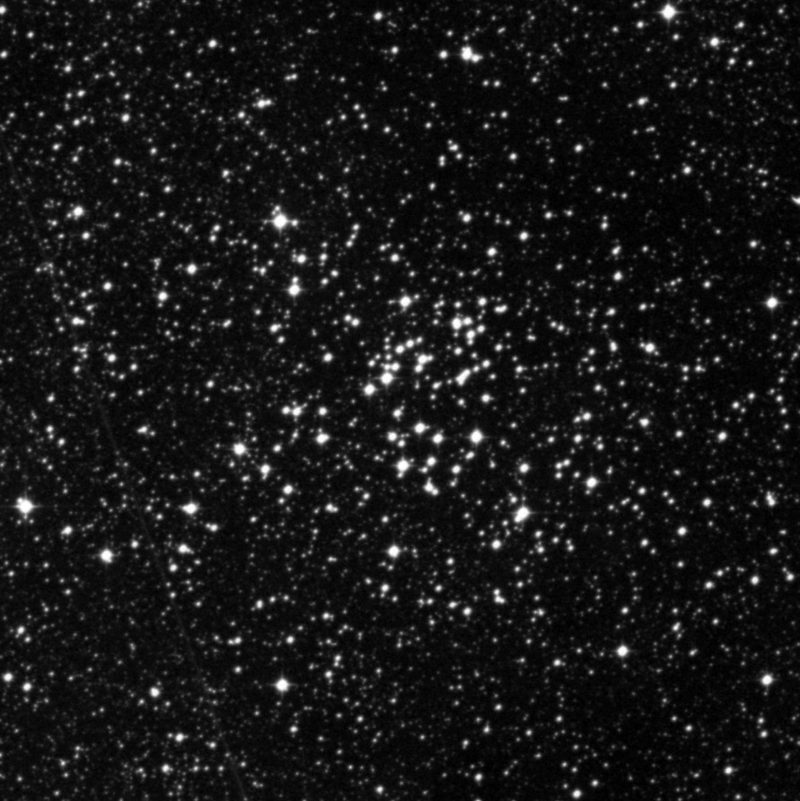
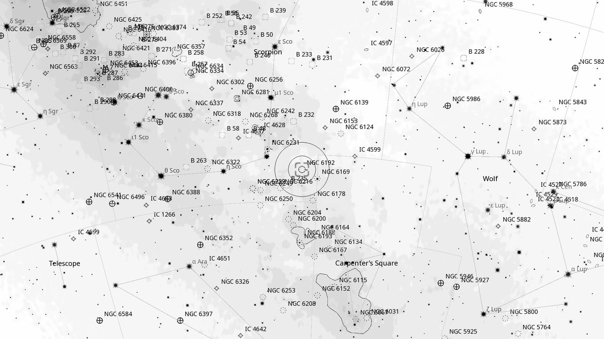
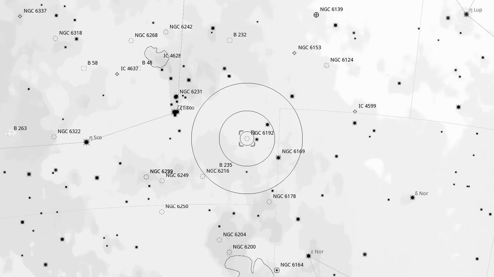
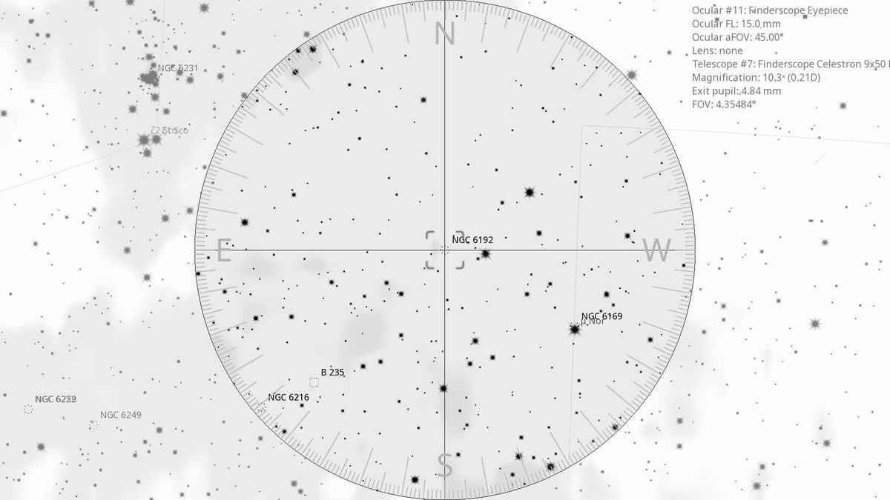
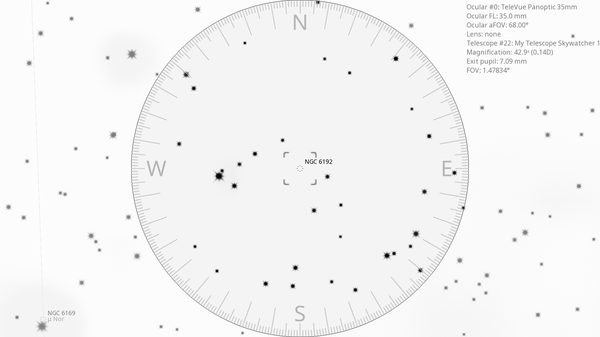

NGC 6192 (OC)
Open Cluster in Scorpius
| R.A. | Dec. | Size | Mag | SB | Cnt.St | Type | Distance | Chart |
|---|---|---|---|---|---|---|---|---|
| 16h 40m 24.5s | -43° 21′ 58.8″ | 7.0′ | 8.5 | 12.5 | I2r | OC | -- | -- |

Source: POSS-2 UK Schmidt Red (STScI) | Field: 15′ × 15′
Background
NGC 6192 is a relatively bright (mag 8.5) open cluster in Scorpius, 5,000 light-years away. 30 stars in a moderately compact, slightly irregular distribution.
My Observing Notes
44-cm (Club 17.5-inch f/5): Find from the naked-eye NGC 6231 in the curve of Scorpius's tail; move the Telrad edge onto ζ^2 Sco (mag 3.6, 2.8° WSW). 20–30 stars in an irregular shape, with one chain seeming to hang off the bottom of the cluster.(Saturday, September 2025)
References
Charts

Ultra-wide view (~25° field)

Wide-field view with Telrad rings (4°, 2°, 0.5°)

Finderscope view (9×50 RACI, ~4.4° TFOV)

Eyepiece view — 35 mm Panoptic on 12-inch f/5 (1.6° TFOV)